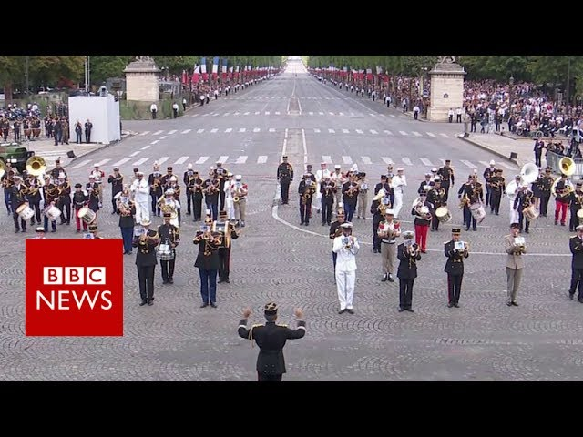

Legacy
Daft Punk are regarded by music journalists as one of the most influential acts in dance music history. They have been acknowledged in works by other artists. In "Losing My Edge", the first single by LCD Soundsystem, lead singer James Murphy jokingly bragged about being the first to "play Daft Punk to the rock kids." LCD Soundsystem also recorded the song "Daft Punk Is Playing at My House", which reached No. 29 in the UK and was nominated for Best Dance Recording at the 2006 Grammy Awards. The Soulwax remix of the song also contains samples of many Daft Punk tracks as well as tracks by Thomas Bangalter.
Daft Punk tracks have been sampled or covered by other artists. "Technologic" was sampled by Swizz Beatz for the Busta Rhymes song "Touch It". In a later remix of "Touch It" the line "touch it, bring it, pay it, watch it, turn it, leave it, start, format it" from "Technologic" was sung by R&B and rap artist Missy Elliott. Kanye West's 2007 song "Stronger" from the album Graduation borrows the melody and features a vocal sample of Daft Punk's "Harder, Better, Faster, Stronger". Daft Punk's robotic costumes make an appearance in the music video for "Stronger". The track "Daftendirekt" from Daft Punk's album Homework was sampled for the Janet Jackson song "So Much Betta" from her 2008 album Discipline. The track "Aerodynamic" was sampled for Wiley's 2008 single "Summertime". "Veridis Quo" from the album Discovery was sampled for the Jazmine Sullivan song "Dream Big" from her 2008 album Fearless. DJs Marc Mysterio and Téo Moss released a cover version of "One More Time" featuring the vocals of Yardi Don. Daft Punk's "Around the World" was sampled for JoJo's 2009 song "You Take Me (Around the World)". The song "Cowboy George" by The Fall contains a clip of "Harder, Better, Faster, Stronger". A cappella group Pentatonix performed a medley of Daft Punk songs, released as a YouTube video. As of June 2020, the video had been viewed over 330 million times. The medley won for Best Arrangement, Instrumental or a Cappella of the 57th Grammy Awards.
A Daft Punk medley was played at the 2017 Bastille Day parade by a French military band, in front of French President Emmanuel Macron and his many guests, who included then-U.S. President Donald Trump. Baicalellia daftpunka, a species of flatworm, was named after Daft Punk in 2018 because part of the organism resembles a helmet.
